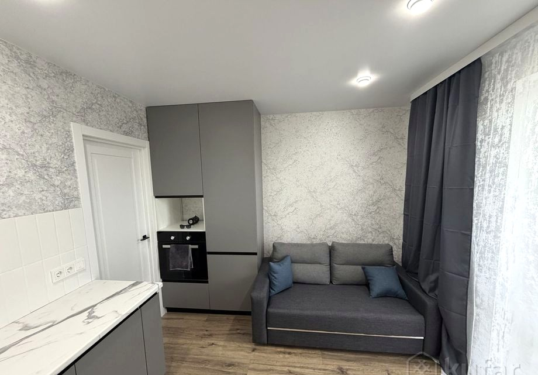
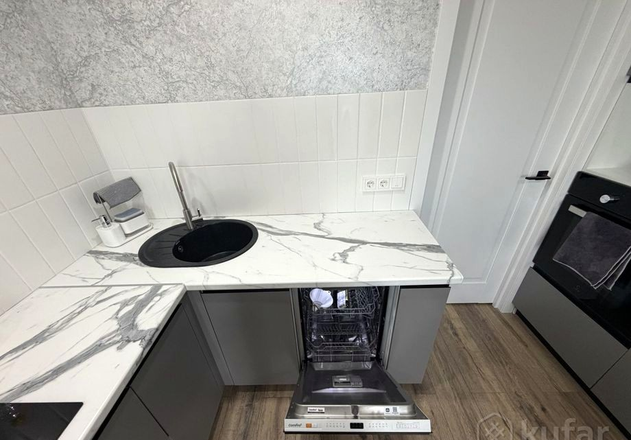
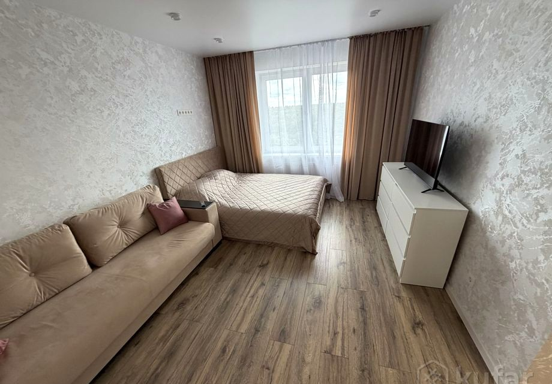
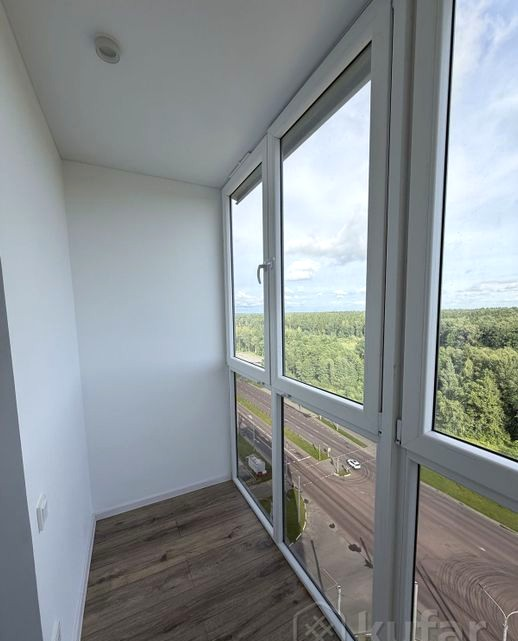
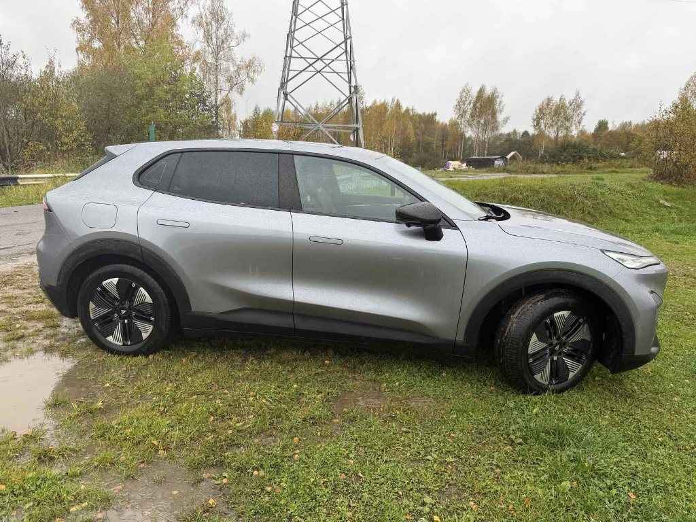
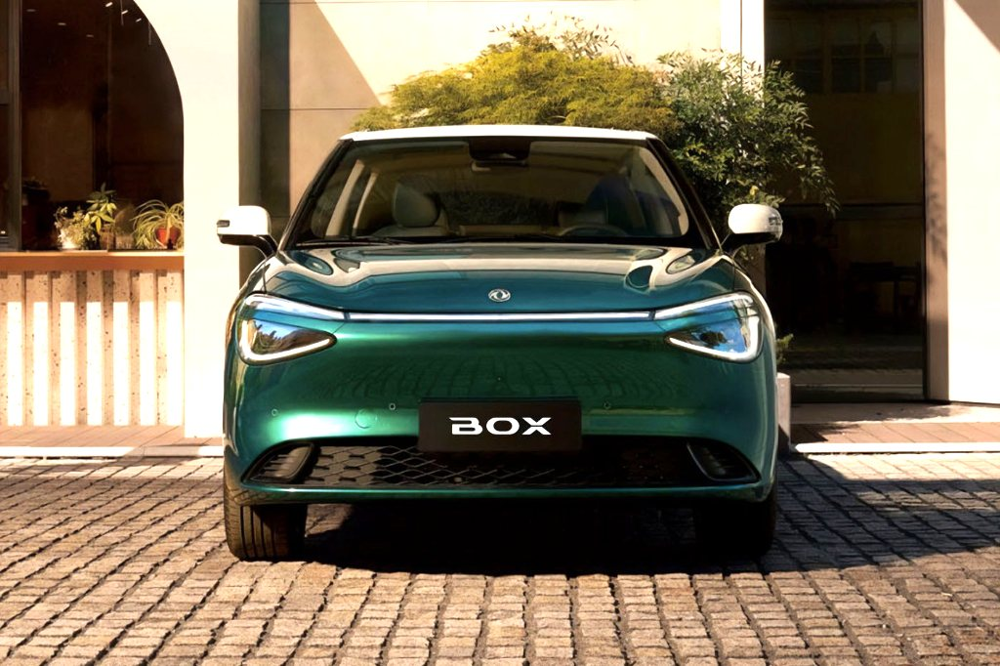
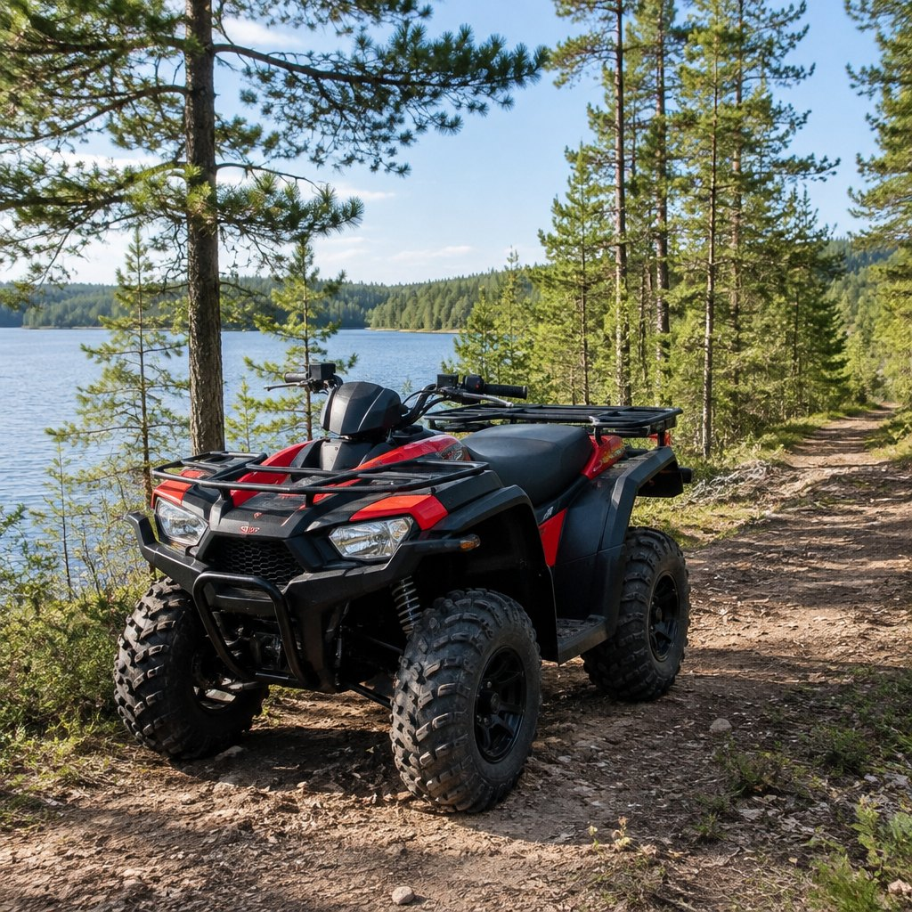

Квартира на сутки, машина и квадроциклы — всё для поездки в Витебск
Студия с новой мебелью и техникой на 15 этаже нового дома на Марка Фрадкина, 7. До шести гостей, постель и полотенца включены. Для поездок — два электромобиля на выбор, Deepal S05 и Dongfeng Box, и квадроциклы для выездов за город.
Всё для короткого проживания
Квартира только после ремонта: новая мебель, кухня с техникой, свежая постель. Заезд возможен в день обращения.
Новая мебель
Комплект мебели без следов использования, светлые стены и деревянный ламинат.
Кухня с техникой
Варочная панель, духовка, посудомоечная машина, мойка и обеденная зона у окна.
Постель и полотенца
На каждого гостя — комплект постельного белья и банных принадлежностей.
Санузел
Душевая за стеклом, инсталляция с чёрной панелью, раковина на деревянной тумбе.
Вид на проспект
Окна выходят на проспект, в квартире светлый балкон с панорамой города.
До 6 гостей
Две спальные поверхности и диван: подойдёт семье, паре друзей или командировочным.
Так квартира выглядит сейчас
Сьёмка без ретуши: те же диван, кухня и санузел, что вы увидите по приезду.







Дом на Марка Фрадкина, 7
Тихий микрорайон с быстрым выездом на объездную: удобно, если приехали на машине или с чемоданом.
Остановка транспорта
Пешком до остановки около 50 метров, городской транспорт ходит каждые 3 минуты.
Магазин «Веста»
Большой продуктовый в пятистах метрах от подъезда.
Центр города
До центра девять минут на маршрутке.
Такси до центра
Примерная стоимость поездки в центр города.
Объездная трасса
Быстрый выезд на объездную для поездок по Беларуси.
Два электромобиля рядом с квартирой
Deepal S05 — новый кроссовер с большим экраном и камерами. Второй автомобиль — Dongfeng Box, компактный электрический хэтчбек: проще на парковке в центре и дешевле в аренде. Обе машины выдаём чистыми и заряженными у квартиры.


Deepal S05: залог от 700 р., 350 км в сутки включено, перепробег 0,50 р./км. По Dongfeng Box и квадроциклам цену называем под даты.
За город — на квадроциклах
Для гостей, которым мало города: квадроциклы напрокат, чтобы выбраться к лесу и озёрам под Витебском. Выдаём с экипировкой, показываем маршрут и объясняем управление перед выездом.

Что входит
Шлемы и экипировка, инструктаж перед выездом, заправленный бак и подсказанный маршрут. Количество машин и время бронируем под вашу компанию.
Сколько стоит
Тариф зависит от числа машин и часов — называем цену под ваши даты, без доплат на месте.
Встретим в аэропорту или в Орше
Трансфер из аэропортов и из Орши: забираем с табличкой, помогаем с вещами, везём до квартиры. Цену называем заранее по маршруту.
Аэропорт Минск — Витебск
Встреча в зале прилёта, ожидание по времени рейса.
Орша — Витебск
Быстро и комфортно с железнодорожного вокзала.
Витебск — аэропорт
Обратный трансфер, заказывайте вместе с квартирой.
Посчитайте проживание и автомобиль
Выберите число суток и гостей: увидите ориентировочную сумму и сможете сразу отправить её хозяину.
Что чаще всего спрашивают
Если ответа нет ниже — напишите на Куфаре, отвечаем быстро.
Свободные даты подтверждает хозяин
Нажмите кнопку и напишите в объявлении: даты, число гостей и нужен ли автомобиль. Ответим и забронируем.